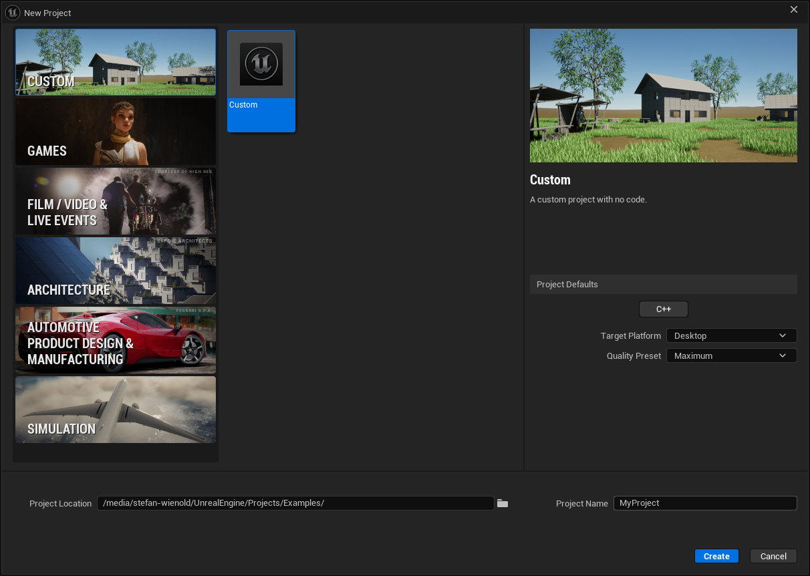
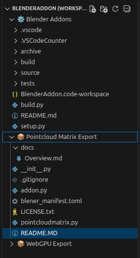
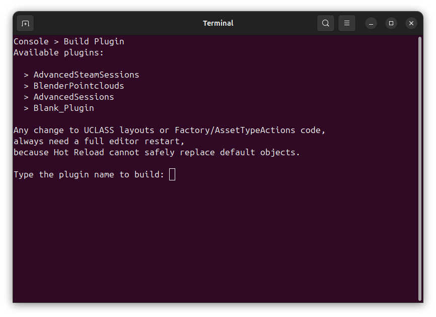
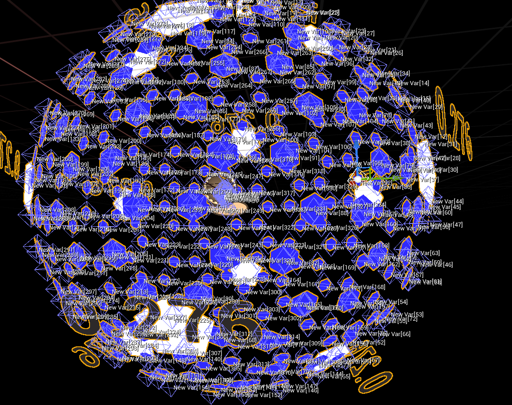
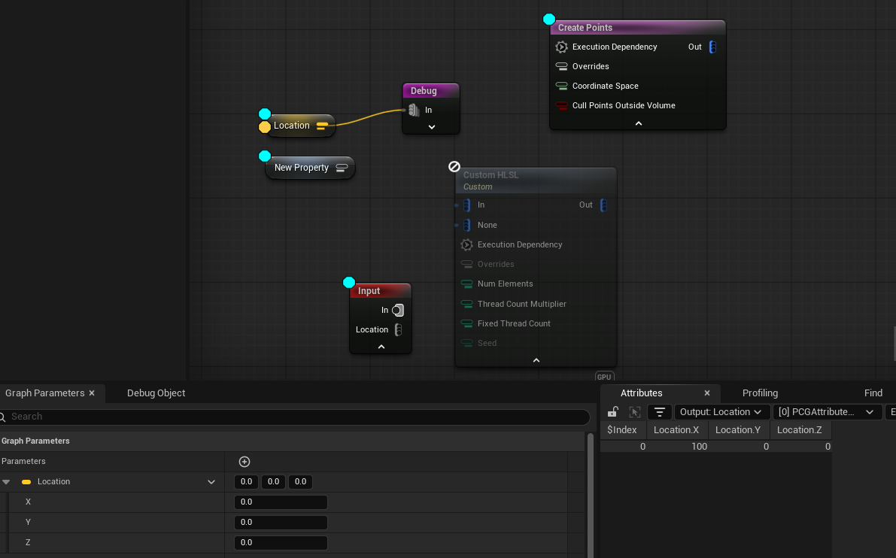
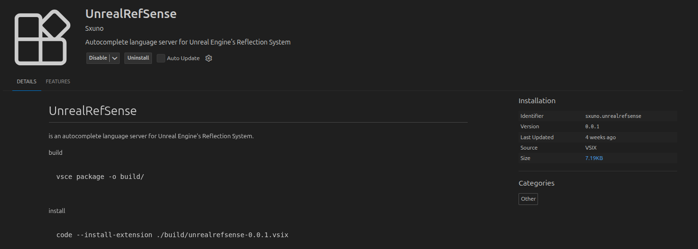
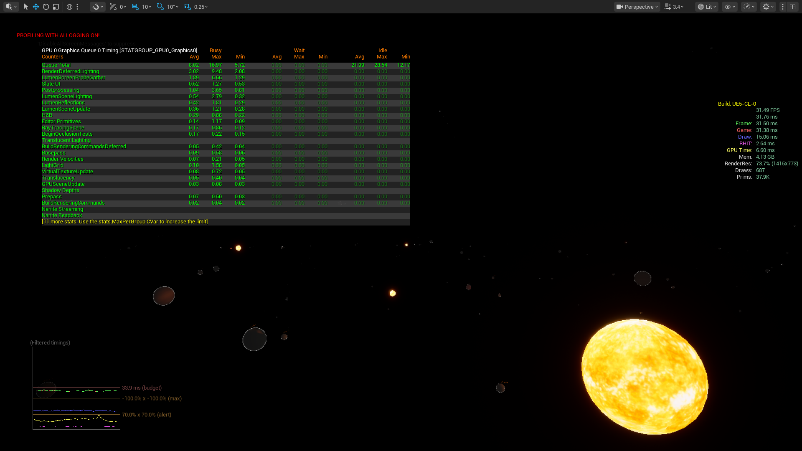

Description
Workflow automation Linux exlusive with cross-platform source files.
Automations:
compileprojectfiles dynamic shell for buildin versioning
Tools:
setup.py for workspace automation linking Blender Addon Toolchain
svg-builder.py for changing file extention for vsc to inetrpret as code or media
Launcher:
custom template
Automations:
compileprojectfiles dynamic shell for buildin versioning
Tools:
setup.py for workspace automation linking Blender Addon Toolchain
svg-builder.py for changing file extention for vsc to inetrpret as code or media
Launcher:
custom template



Features



Performance
